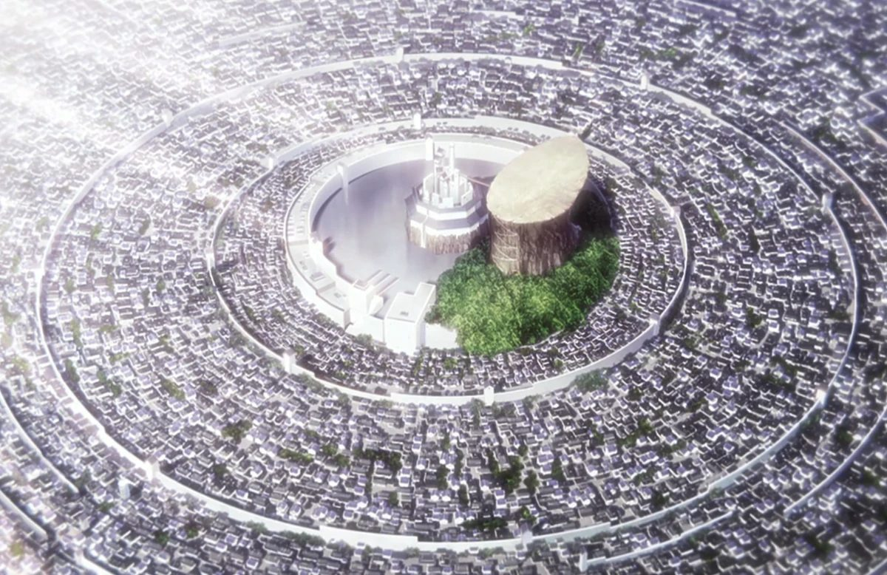
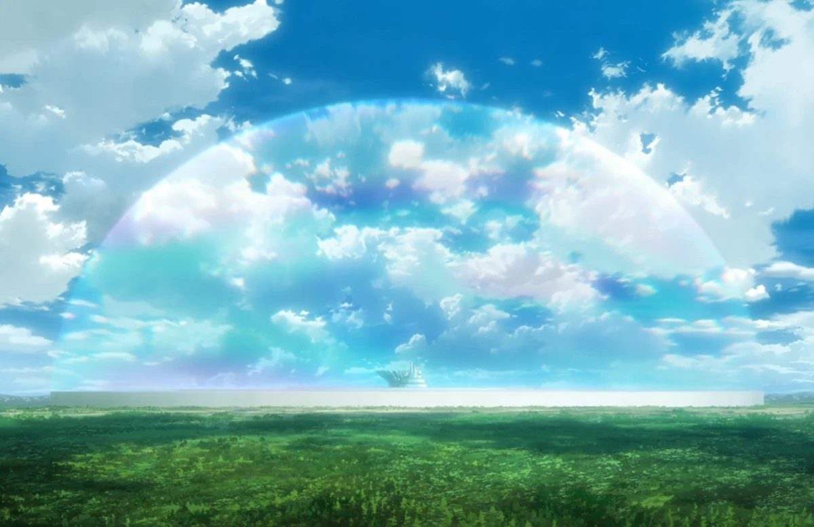
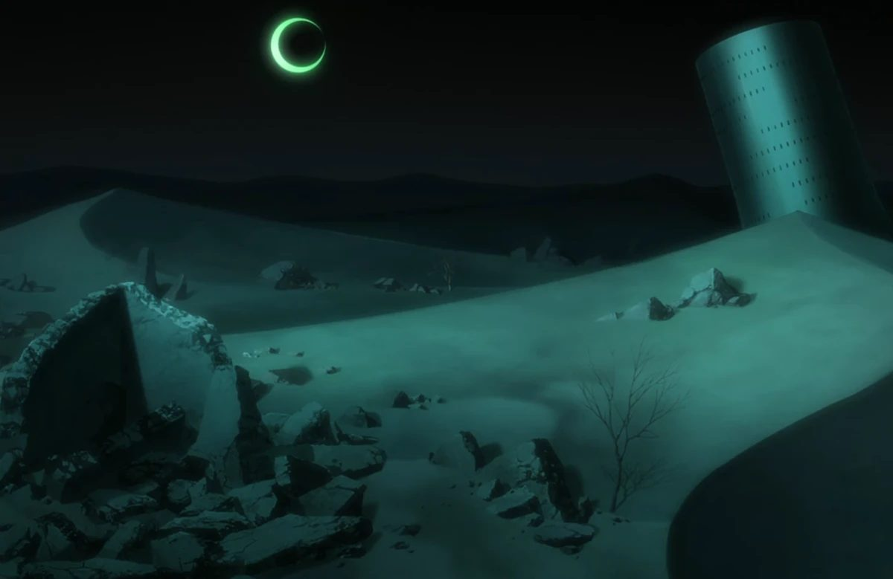
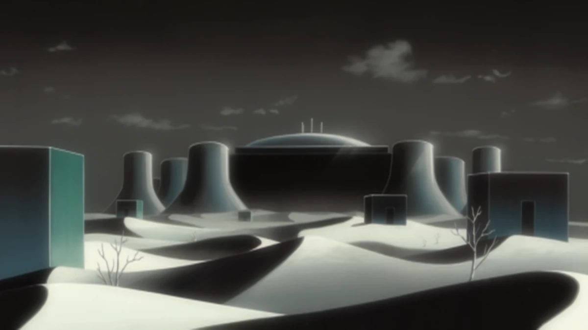
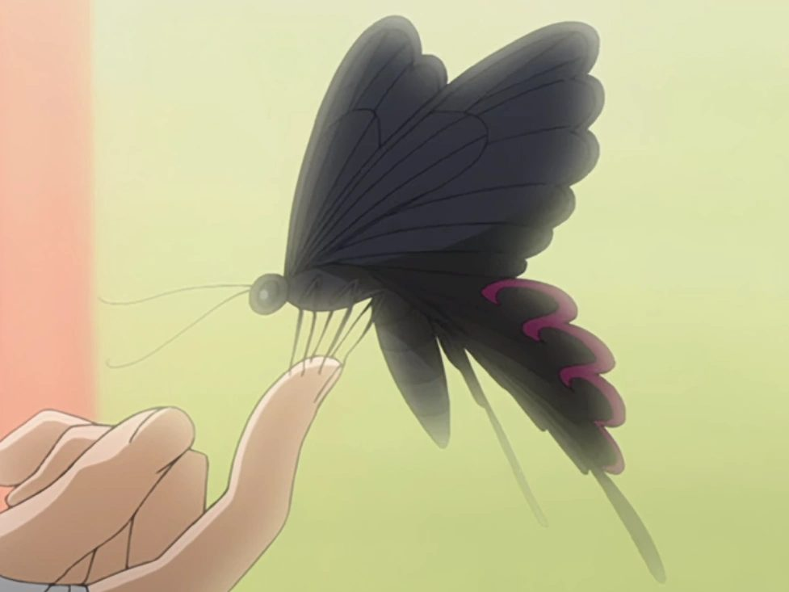
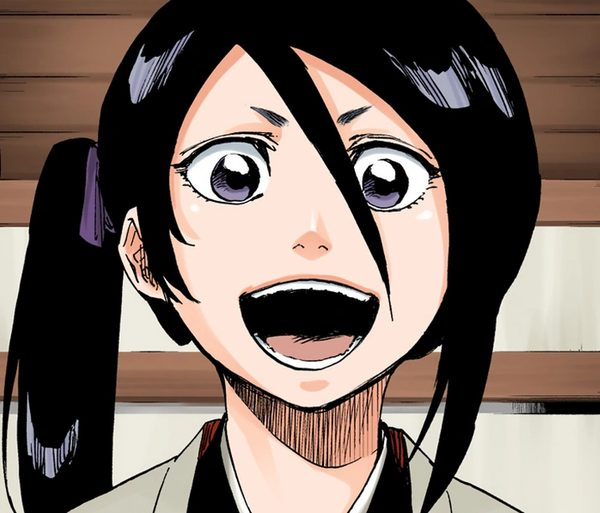
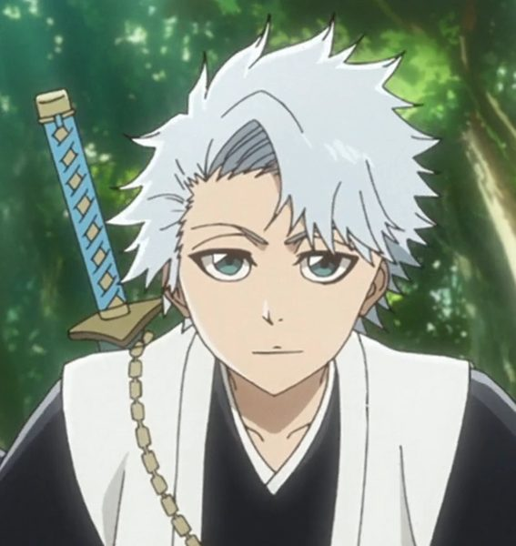
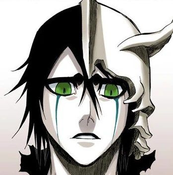
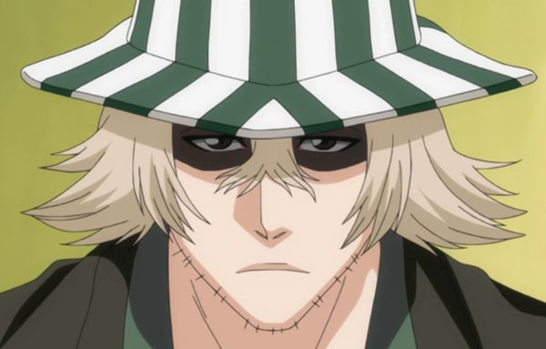

Енциклопедія
Усі капітани Ґотею 13, Еспада та квінсі в одному місці.
Спільнота
Щосуботи дивимося нові серії разом на великому екрані.
Мерч
Фігурки, постери та косплей за доступними цінами.
Про аніме Bleach
Bleach — японська манґа, яку створив Тайто Кубо. Вона виходила в журналі Weekly Shōnen Jump з 2001 по 2016 рік і налічує 74 томи. Аніме-адаптацію від студії Pierrot показували у 2004–2012 роках (366 епізодів), а у 2022 році стартувало продовження — «Тисячолітня кривава війна».
Головний герой — п'ятнадцятирічний Ічіґо Куросакі, який бачить привидів. Одного вечора він отримує силу шінігамі (бога смерті) від Рукії Кучікі і відтоді захищає людей від пустих — злих духів, що пожирають душі.
Разом із друзями — Оріхіме Іноуе, Ясуторою Садо та квінсі Урю Ішидою — Ічіґо вирушає до Товариства душ, щоб урятувати Рукію від страти. Ця подорож відкриває змову капітана Сосуке Айзена, війну з арранкарами Уеко Мундо, а згодом — битву з імперією квінсі Вандерайх та її володарем Ювахом.
Особливість Bleach — у поєднанні японської естетики (кімоно, катани, храмова архітектура) з сучасним стилем: рок-музикою, модним одягом героїв та яскравою графікою.
| Автор манґи | Тайто Кубо |
|---|---|
| Журнал | Weekly Shōnen Jump (Shueisha) |
| Роки виходу манґи | 2001 – 2016, 74 томи |
| Студія аніме | Pierrot |
| Перший сезон | 2004 – 2012, 366 епізодів |
| Продовження | «Тисячолітня кривава війна» (з 2022 року) |
| Композитор | Широ Саґісу |
| Жанр | Сьонен, екшн, надприродне, пригоди |
- За задумом Тайто Кубо, шінігамі спочатку мали битися не мечами, а пістолетами.
- Спочатку Кубо хотів назвати манґу «Black» — за кольором одягу шінігамі, але обрав «Bleach» (англ. «відбілювач»), що асоціюється з білим.
- Кожен том манґи відкривається коротким віршем від автора.
- Після 10-річної перерви аніме повернулося у 2022 році, щоб екранізувати фінальну арку.
Світи Bleach

Сейрейтей
Товариство душ
Уеко Мундо
Лас Ночес
Пекельний метеликЧому варто подивитися Bleach
- Неймовірно стильні персонажі та 13 загонів Ґотею.
- Епічні битви з шікаєм та банкаєм.
- Легендарний саундтрек композитора Широ Саґісу.
- Цілий всесвіт: Світ живих, Товариство душ, Уеко Мундо.
Офіційний трейлер «Тисячолітньої кривавої війни»
Джерело: офіційний YouTube-канал VIZ Media.
Мерч фан-клубу
Фігурка Ічіґо
PVC, 18 см, банкай-форма
1450 грн

Постер «Рукія»
Формат A2, матовий папір
310 грн 250 грн

Хаорі 10-го загону
Косплей-накидка, S–XL
1900 грн

Маска пустого
Репліка, ручне фарбування
850 грн

Капелюх Урахари
Смугаста панама, бавовна
700 грн 600 грн
Шарф Ґінпаку
Шарф Бякуї Кучікі, шовк
990 грн
Відгуки учасників клубу
Де нас знайти
Факт дня
За задумом Тайто Кубо, шінігамі спочатку мали битися не мечами, а пістолетами.
Фан-клуб «Soul Society»
вул. Каракурська, 15
м. Київ, 01001
Збори щосуботи о 18:00
Усі контакти фан-клубу →